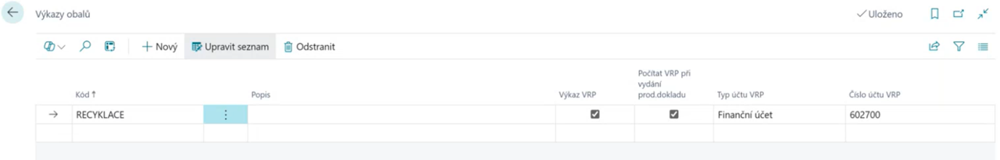
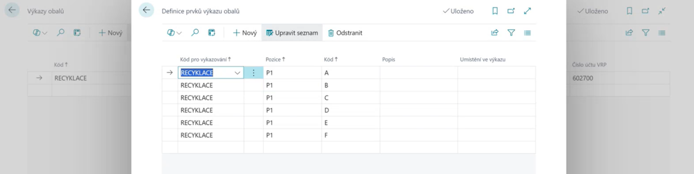
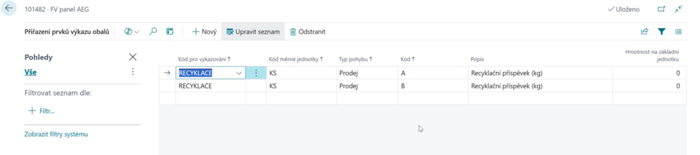
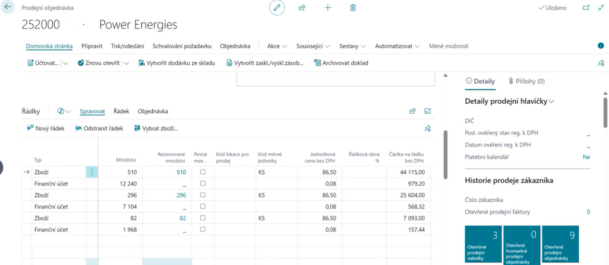

VRP – Nastavení a konfigurace
Aktualizace: 01.06.2025
Pro správnou funkci VRP (viditelné recyklační příspěvky) je nutné provést několik kroků v prostředí Business Central. Tento návod popisuje, jak aktivovat funkci VRP, nastavit účty, definovat prvky VRP a propojit je s kartami zboží.
Aktivace VRP ve výkazu obalů
- Vyberte ikonu
 , zadejte Výkazy obalů a poté vyberte příslušný odkaz.
, zadejte Výkazy obalů a poté vyberte příslušný odkaz. - Na stránce Výkazy obalů založte nový řádek nebo upravte existující výkaz.
- Zaškrtněte pole Výkaz VRP.
- Aktivujte volbu Počítat VRP při vydání prodejního dokladu.
- Nastavte Typ účtu VRP na Finanční účet.
- Vyplňte příslušné Číslo účtu VRP.

Definice prvků VRP
Definice prvků VRP určuje, jaký příspěvek se má dopočítat (např. za hmotnost, kusy, v CZK nebo EUR).
- Vyberte ikonu , zadejte Definice prvků výkazu obalů a potvrďte.
- Vytvořte nové řádky dle potřeby:
- Kód pro vykazování – např. EKOKOM, VRP-CZ, VRP-EUR
- Pozice – např. P1 (hmotnost), P2 (kusy)
- Kód pozice – např. A,B,C,D... nebo 1,2,3,4...
- Popis – např. Recyklační příspěvek za kilogram, Recyklační příspěvek za kus

Nastavení karty zboží
- Na kartě zboží zvolte Související > Zboží > Prvky výkazu obalů.
- Přidejte příslušný prvek VRP ke konkrétnímu zboží.

Proces při vystavení dokladu
Při vystavení prodejního dokladu (faktura, dodací list) systém automaticky:
- Zkontroluje, zda je na kartě zboží přiřazen prvek VRP.
- Na základě množství (kusů nebo hmotnosti) vypočítá příslušný příspěvek.
- Přidá na doklad samostatný řádek na finanční účet s příslušnou částkou VRP.
Příklad faktury s VRP:

Tip
Zkontrolujte měny – příspěvky je možné nastavit zvlášť pro CZK a EUR. Definujte všechny potřebné kombinace – například VRP za kg pro CZK i EUR, VRP za kus pro CZK i EUR. Ověřte účty VRP – správné zaúčtování na účet (např. 548) je klíčové pro správnou evidenci.